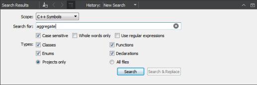
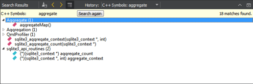
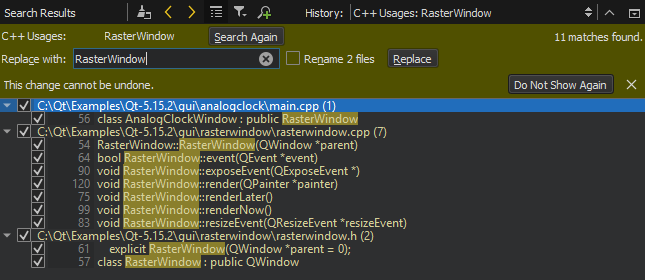
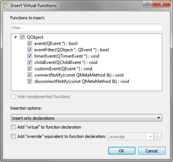
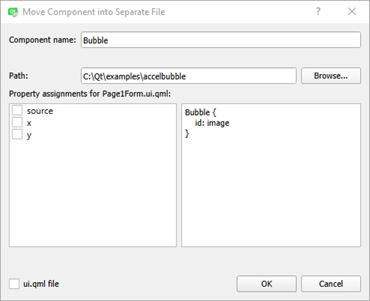

Refactoring
Refactor code to:
- Improve internal quality of your application
- Improve performance and extensibility
- Improve code readability and maintainability
- Simplify code structure
Finding Symbols
To find instances of a specific symbol in your Qt C++ project, place the cursor on the symbol in the editor and select Tools > C++ > Find References to Symbol Under Cursor or press Ctrl+Shift+U.
Note: You can also select Edit > Find/Replace > Advanced Find > C++ Symbols to search for classes, functions, enums, and declarations either from files listed as part of the project or from all files that are used by the code, such as include files.

Finding QML Types
To find instances of a specific QML type in a project, place the cursor on the type and select Tools > QML/JS > Find References to Symbol Under Cursor or press Ctrl+Shift+U.
Viewing Search Results
Qt Creator searches from the following locations:
- Files listed as a part of the project
- Files directly used by the project files (for example, generated files)
- Header files of used frameworks and libraries
The Search Results pane shows the location and number of search hits in the current project.

You can browse the search results in the following ways:
- To go directly to an instance, double-click the instance in the Search Results pane.
- To move between instances, click the
 (Next Item) button and
(Next Item) button and  (Previous Item) button in the Search Results pane.
(Previous Item) button in the Search Results pane. - To expand and collapse the list of all instances, click the
 (Expand All) button.
(Expand All) button. - To clear the search results, click the
 (Clear) button.
(Clear) button. - To start a new search, click the
 (New Search) button.
(New Search) button.
Renaming Symbols
You can rename symbols in all files in a project. When you rename a class, you can also change filenames that match the class name.
To rename a specific symbol in a Qt project, place the cursor on it and select Tools > C++ > Rename Symbol Under Cursor or press Ctrl+Shift+R. To rename a QML type in a project, select Tools > QML/JS > Rename Symbol Under Cursor or press Ctrl+Shift+R.
The Search Results pane shows the location and number of instances of the symbol in the current project.

To replace all selected instances, enter the name of the new symbol in the Replace with text box, and select Replace. To omit an instance, deselect the check box next to the instance.
Note: This action replaces all selected instances of the symbol in all files listed in the Search Results pane. You cannot undo this action.
If the symbol is a class, select the Rename files check box to also change the filenames that match the class name.
Note: Renaming local symbols does not open the Search Results pane. The instances of the symbol are highlighted in code and you can edit the symbol. All instances of the local symbol are changed as you type.
Column Editing
To apply a change to several rows in a column simultaneously, press Alt, select the rows, and enter or remove text. The changes are made simultaneously at the cursor position on all the selected rows.
Applying Refactoring Actions
Qt Creator allows you to quickly and conveniently apply actions to refactor your code by selecting them in a context menu. The actions available depend on the position of the cursor in the code editor.
To apply refactoring actions to C++ code, right-click an operand, conditional statement, string, or name to open a context menu. To apply refactoring actions to QML code, right-click an item ID or name.
In the context menu, select Refactoring and then select a refactoring action.
You can also press Alt+Enter to open a context menu that contains refactoring actions available in the current cursor position.
If you use the Clang code model to parse the C++ files, the Clang fix-it hints that have been integrated into Qt Creator are also available to you. In addition to the standard ways of activating refactoring actions, you can select the actions that are applicable on a line in the context menu in the left margin of the code editor.
Refactoring C++ Code
You can apply the following types of refactoring actions to C++ code:
- Change binary operands
- Simplify if and while conditions (for example, move declarations out of if conditions)
- Modify strings (for example, set the encoding for a string to Latin-1, mark strings translatable, and convert symbol names to camel case)
- Create variable declarations
- Create function declarations and definitions
The following table summarizes the refactoring actions for C++ code. The action is available when the cursor is in the position described in the Activation column.
| Refactoring Action | Description | Activation |
|---|---|---|
| Add Curly Braces | Adds curly braces to an if statement that does not contain a compound statement. For example, rewrites
if (a)
b;
as
if (a) {
b;
}
| if |
| Move Declaration out of Condition | Moves a declaration out of an if or while condition to simplify the condition. For example, rewritesif (Type name = foo()) {} as Type name = foo; if (name) {} | Name of the introduced variable |
| Rewrite Condition Using || | Rewrites the expression according to De Morgan's laws. For example, rewrites:!a && !b as !(a || b) | && |
| Rewrite Using operator | Rewrites an expression negating it and using the inverse operator. For example, rewrites:
| <=, <, >, >=, == or != |
| Split Declaration | Splits a simple declaration into several declarations. For example, rewrites:int *a, b; as int *a; int b; | Type name or variable name |
| Split if Statement | Splits an if statement into several statements. For example, rewrites:if (something && something_else) { } as if (something) { if (something_else) { } } and if (something || something_else) x; with if (something) x; else if (something_else) x; | && or || |
| Swap Operands | Rewrites an expression in the inverse order using the inverse operator. For example, rewrites:a op b as b flipop a | <=, <, >, >=, ==, !=, && or || |
| Convert to Decimal | Converts an integer literal to decimal representation | Numeric literal |
| Convert to Hexadecimal | Converts an integer literal to hexadecimal representation | Numeric literal |
| Convert to Octal | Converts an integer literal to octal representation | Numeric literal |
| Convert to Objective-C String Literal | Converts a string literal to an Objective-C string literal if the file type is Objective-C(++). For example, rewrites the following strings"abcd" QLatin1String("abcd") QLatin1Literal("abcd") as
@"abcd"
| String literal |
| Enclose in QLatin1Char() | Sets the encoding for a character to Latin-1, unless the character is already enclosed in QLatin1Char, QT_TRANSLATE_NOOP, tr, trUtf8, QLatin1Literal, or QLatin1String. For example, rewrites
'a'
as
QLatin1Char('a')
| String literal |
| Enclose in QLatin1String() | Sets the encoding for a string to Latin-1, unless the string is already enclosed in QLatin1Char, QT_TRANSLATE_NOOP, tr, trUtf8, QLatin1Literal, or QLatin1String. For example, rewrites
"abcd"
as
QLatin1String("abcd")
| String literal |
| Mark as Translatable | Marks a string translatable. For example, rewrites "abcd" with one of the following options, depending on which of them is available:tr("abcd") QCoreApplication::translate("CONTEXT", "abcd") QT_TRANSLATE_NOOP("GLOBAL", "abcd") | String literal |
| Add Definition in ... | Inserts a definition stub for a function declaration either in the header file (inside or outside the class) or in the implementation file. For free functions, inserts the definition after the declaration of the function or in the implementation file. Qualified names are minimized when possible, instead of always being fully expanded. For example, rewrites
Class Foo {
void bar();
};
as (inside class)
Class Foo {
void bar() {
}
};
as (outside class)
Class Foo {
void bar();
};
void Foo::bar()
{
}
as (in implementation file) // Header file Class Foo { void bar(); }; // Implementation file void Foo::bar() { } | Function name |
Add Function Declaration | Inserts the member function declaration that matches the member function definition into the class declaration. The function can be public, protected, private, public slot, protected slot, or private slot. | Function name |
| Switch with Next/Previous Parameter | Moves a parameter down or up one position in a parameter list. | Parameter in the declaration or definition of a function |
| Extract Function | Moves the selected code to a new function and replaces the block of code with a call to the new function. Enter a name for the function in the Extract Function Refactoring dialog. | Block of code selected |
| Extract Constant as Function Parameter | Replaces the selected literal and all its occurrences with the function parameter newParameter. The parameter newParameter will have the original literal as the default value. | Block of code selected |
| Add Local Declaration | Adds the type of an assignee, if the type of the right-hand side of the assignment is known. For example, rewrites
a = foo();
as
Type a = foo();
where Type is the return type of | Assignee |
| Convert to Camel Case | Converts a symbol name to camel case, where elements of the name are joined without delimiter characters and the initial character of each element is capitalized. For example, rewrites an_example_symbol as anExampleSymbol and AN_EXAMPLE_SYMBOL as AnExampleSymbol | Identifier |
| Complete Switch Statement | Adds all possible cases to a switch statement of the type enum | switch |
| Generate Missing Q_PROPERTY Members | Adds missing members to a Q_PROPERTY:
| Q_PROPERTY |
| Apply Changes | Keeps function declarations and definitions synchronized by checking for the matching declaration or definition when you edit a function signature and by applying the changes to the matching code. | Function signature. When this action is available, a light bulb icon appears: |
| Add #include for undeclared or forward declared identifier | Adds an #include directive to the current file to make the definition of a symbol available. | Undeclared identifier |
| Reformat Pointers or References | Reformats declarations with pointers or references according to the code style settings for the current project. In case no project is open, the current global code style settings are used. For example, rewrites: char*s; as char *s; When applied to selections, all suitable declarations in the selection are rewritten. | Declarations with pointers or references and selections containing such declarations |
| Create Getter and Setter Member Functions | Creates either both getter and setter member functions for member variables or only a getter or setter. | Member variable in class definition |
| Move Function Definition | Moves a function definition to the implementation file, outside the class or back to its declaration. For example, rewrites:class Foo { void bar() { // do stuff here } }; as class Foo { void bar(); }; void Foo::bar() { // do stuff here } | Function signature |
| Move All Function Definitions | Moves all function definitions to the implementation file or outside the class. For example, rewrites:class Foo { void bar() { // do stuff here } void baz() { // do stuff here } }; as class Foo { void bar(); void baz(); }; void Foo::bar() { // do stuff here } void Foo::baz() { // do stuff here } | Class name |
| Assign to Local Variable | Adds a local variable which stores the return value of a function call or a new expression. For example, rewrites:QString s; s.toLatin1(); as QString s; QByteArray latin1 = s.toLatin1(); and
new Foo;
as Foo * localFoo = new Foo; | Function call or class name |
| Insert (Pure) Virtual Functions | Select an insertion mode:
 | Class or base class name |
| Optimize for-Loop | Rewrites post increment operators as pre increment operators and post decrement operators as pre decrement operators. It also moves other than string or numeric literals and id expressions from the condition of a for loop to its initializer. For example, rewrites:for (int i = 0; i < 3 * 2; i++) as for (int i = 0, total = 3 * 2; i < total; ++i) | for |
| Escape String Literal as UTF-8 | Escapes non-ASCII characters in a string literal to hexadecimal escape sequences. String Literals are handled as UTF-8. | String literal |
| Unescape String Literal as UTF-8 | Unescapes octal or hexadecimal escape sequences in a string literal. String Literals are handled as UTF-8. | String literal |
| Convert to Stack Variable | Converts the selected pointer to a stack variable. For example, rewrites:QByteArray *foo = new QByteArray("foo"); foo->append("bar"); as QByteArray foo = "foo"; foo.append("bar"); This operation is limited to work only within function scope. Also, the coding style for pointers and references is not respected yet. | Pointer Variable |
| Convert to Pointer | Converts the selected stack variable to a pointer. For example, rewrites:QByteArray foo = "foo"; foo.append("bar"); as QByteArray *foo = new QByteArray("foo"); foo->append("bar"); This operation is limited to work only within function scope. Also, the coding style for pointers and references is not respected yet. | Stack Variable |
| Convert connect() to Qt 5 Style | Converts a Qt 4 QObject::connect() to Qt 5 style. | QObject::connect() (Qt 4 style) |
Refactoring QML Code
You can apply the following types of refactoring actions to QML code:
- Rename IDs
- Split initializers
- Move a QML type into a separate file to reuse it in other .qml files
The following table summarizes the refactoring actions for QML code. The action is available when the cursor is in the position described in the Activation column.
| Refactoring Action | Description | Activation |
|---|---|---|
| Move Component into Separate File | Moves a QML type into a separate file. Give the new component a name and select whether properties are set for the new component or for the original one.  | QML type name. This action is also available in the Form Editor in the Design mode. |
| Split Initializer | Reformats a one-line type into a multi-line type. For example, rewrites
Item { x: 10; y: 20; width: 10 }
as
Item {
x: 10;
y: 20;
width: 10
}
| QML type property |
| Wrap Component in Loader | Wraps the type in a Component type and loads it dynamically in a Loader type. This is usually done to improve startup time. | QML type name |
| Add a message suppression comment | Prepends the line with an annotation comment that stops the message from being generated. | Error, warning or hint from static analysis |